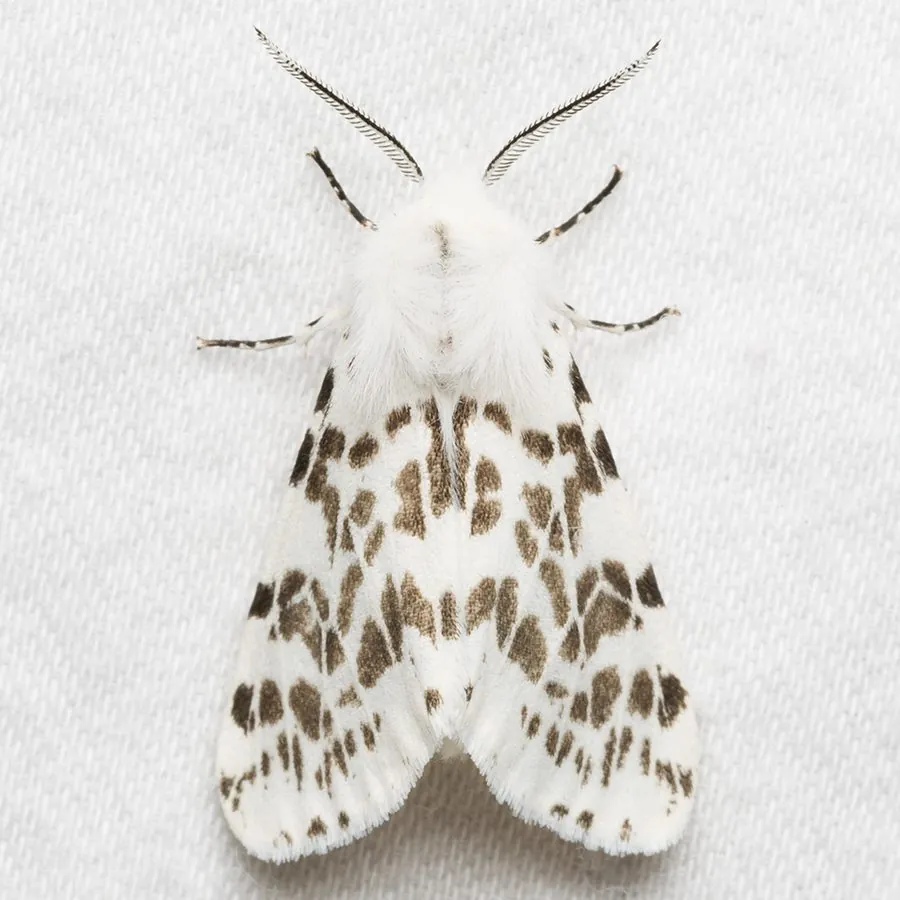

昆虫 · 动物界
美国白蛾 Hyphantria cunea

原产北美、已入侵中国的外来害虫，幼虫群集吐丝结成白色网幕，取食多种树木叶片，是林业检疫重点对象。
- 分类
- 门节肢动物门纲昆虫纲目鳞翅目科灯蛾科属白蛾属
- 栖息环境
- 杨树、柳树、榆树、法桐等阔叶树的树冠与枝条
- 地理分布
- 原产北美；中国华北、东北、华东等地已有入侵种群
- 保护级别
- IUCN 暂无评估；中国外来入侵物种，无保护级别
物种志
美国白蛾成虫翅展 2.5–4 厘米，通体白色，翅面有时带少量黑色小斑点，雌蛾腹部较粗壮，雄蛾触角呈羽毛状；它的幼虫体表有长毛，体色随龄期变化，从淡黄到黑褐色不等，背线明显。幼虫有群集习性，会吐丝把叶片和枝条罩住，形成白色网幕。
它原产于北美洲，20 世纪 70 年代传入中国，如今在华北、东北、华东等地均有分布，被列入中国外来入侵物种名单。它食性极广，可取食杨、柳、榆、法桐、桑等数百种植物，幼虫在网幕内群集取食，大发生时可将整株树叶吃光。它一年发生 2–3 代，雌蛾产卵 400–1000 枚，卵块多产于叶片背面。防控上应加强检疫、剪除网幕、释放天敌周氏啮小蜂，并配合药剂防治，目前它是林业和园林部门重点监测的害虫。
形态与习性
- 食性幼虫取食杨、柳、榆、桑等数百种植物叶片
- 翅展2.5–4 cm
- 寿命成虫约 1 周，一年 2–3 代
- 繁殖卵生，雌蛾产卵 400–1000 枚于叶背
- 活动节律蛾类夜间活动，幼虫群集取食
- 危害幼虫吐丝结白色网幕，大发生时可吃光整株树叶
趣味知识
- 美国白蛾幼虫会吐丝结成白色网幕，把叶片罩在里面群集取食。
- 它原产北美，20 世纪 70 年代传入中国，现为林业检疫性害虫。
- 周氏啮小蜂是防治美国白蛾的重要天敌，可用于生物防治。
生态关系
- 寄生 ← 周氏啮小蜂 寄生蜂防治美国白蛾